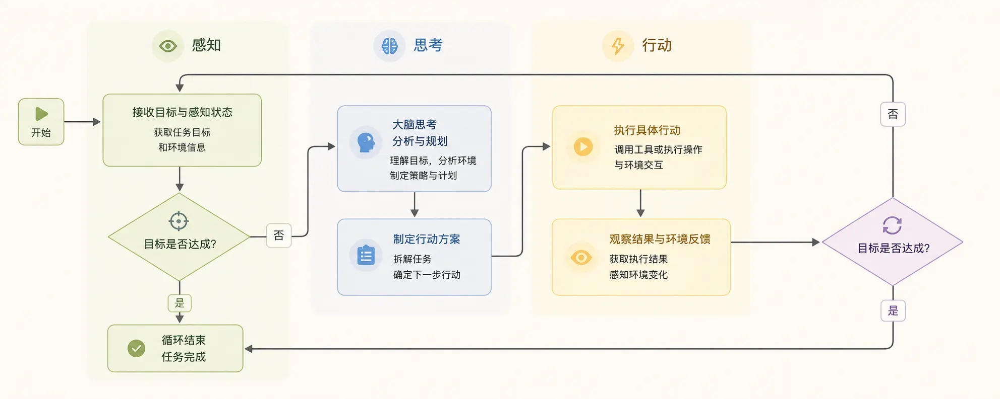
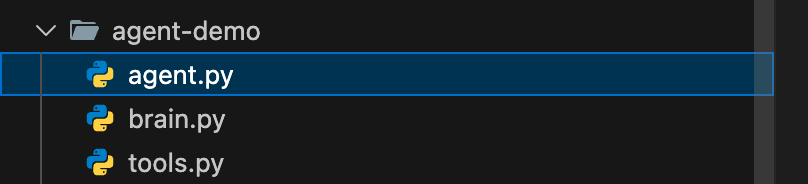

Python Implementation of AI Agent
Before diving into the code, let's establish a clear understanding: think of an AI Agent as aan intelligent program with a brain and hands and feet。
- Brain (core): athat can understand, reason, and make decisionsmodel (e.g., large language model LLM). It is responsible for processing information and making plans.
- Perception (input): The Agent obtains external information through senses, such as user instructions, database query results, web content, sensor data, etc.
- Action (output): The Agent affects the external world through hands and feet, for example, calling a function, sending an email, outputting text on a screen, controlling a robotic arm, etc.
- Goal: All of the Agent's behaviors revolve around a cleargoalunfolds, for example: help me check tomorrow's weather in Beijing.
Its core workflow is a classicPerception-Thinking-Actionloop, as shown in the figure below:

Simple Test Case
agent-demo/ agent.py # 主实现（下面给出） tools.py # 工具实现（可单独文件） memory.py # 简单记忆实现（可单独文件） README.md
Example
agent.py - Minimal AI Agent Prototype (can be run directly)
Explanation:
- The LLM part is simulated by a very simple "rule-based responder"; when actually connecting to an LLM, replace LLMInterface.generate(...)
- Components: LLM abstraction, brain (parsing/decision-making), planner, tool registry, memory, executor
"""
from typing import Any, Dict, List, Callable
import time
# -----------------------------
# Memory (very lightweight)
# -----------------------------
class Memory:
def __init__(self):
self.short = {} # Current conversation context
self.long = {} # Long-term preferences/contacts, etc.
def get_short(self, k, default=None):
return self.short.get(k, default)
def set_short(self, k, v):
self.short[k] = v
def get_long(self, k, default=None):
return self.long.get(k, default)
def set_long(self, k, v):
self.long[k] = v
# -----------------------------
# LLM abstraction (replacement point)
# -----------------------------
class LLMInterface:
def generate(self, prompt: str) -> str:
"""
Here we provide a very simple rule-based simulated responder.
In real use: replace with OpenAI/other model invocation code, and return the model text.
"""
# Minimal parsing example: identify whether we need to determine "rain"
if "whether it is raining" in prompt or "rain" in prompt:
return "Please query the weather first; if it will rain, generate a reminder and send it to the target contact."
if "Generate reminder" in prompt:
return "Please remind Xiao Wang: it will rain in Beijing tomorrow, please bring an umbrella."
return "I understand."
# -----------------------------
# Tool registration and simulated tools
# -----------------------------
class ToolRegistry:
def __init__(self):
self.tools: Dict[str, Callable[..., Any]] = {}
def register(self, name: str, fn: Callable[..., Any]):
self.tools[name] = fn
def call(self, name: str, *args, **kwargs):
if name not in self.tools:
raise ValueError(f"Tool not registered: {name}")
return self.tools[name](*args, **kwargs)
# Simulated tool: weather query (in real situations, a weather API would be called)
def mock_weather_api(city: str, date: str) -> Dict[str, Any]:
# Simple rule: if city contains "Beijing" and date contains "tomorrow", return a rain example
if "Beijing" in city and "tomorrow" in date:
return {"city": city, "date": date, "cond": "rain", "precip_mm": 5}
return {"city": city, "date": date, "cond": "sunny", "precip_mm": 0}
# Simulated tool: send message (in real situations, SMS/email/WeCom etc. would be called)
def mock_send_message(contact: str, message: str) -> bool:
print(f"[Send message] to={contact} message={message}")
return True
# Simulated tool: simple search (illustrative)
def mock_search(query: str) -> str:
return f"Simulated search result: information summary about `{query}`."
# -----------------------------
# Planner / Executor
# -----------------------------
class SimplePlanner:
def plan(self, goal: str) -> List[Dict[str, Any]]:
"""
Decompose the goal into a list of steps (a very simplified implementation)
Each step contains: action (tool name or internal action), params
"""
steps = []
# Example: if the prompt contains "weather", generate two steps: query weather, decide whether to send a reminder
if "weather" in goal or "rain" in goal:
steps.append({"action": "query_weather", "params": {"city": "Beijing", "date": "tomorrow"}})
steps.append({"action": "decide_and_notify", "params": {"contact_name": "Xiao Wang"}})
else:
steps.append({"action": "search", "params": {"query": goal}})
return steps
class Executor:
def __init__(self, tools: ToolRegistry, memory: Memory, llm: LLMInterface):
self.tools = tools
self.memory = memory
self.llm = llm
def run_step(self, step: Dict[str, Any]):
action = step["action"]
params = step.get("params", {})
if action == "query_weather":
res = self.tools.call("weather", params["city"], params["date"])
self.memory.set_short("last_weather", res)
return res
if action == "decide_and_notify":
weather = self.memory.get_short("last_weather", {})
# Simple rule decision
if weather.get("cond") == "rain":
# Let the LLM generate the reminder text (example)
prompt = f"Based on weather information: {weather}, generate a reminder to {params['contact_name']}."
reminder = self.llm.generate(prompt)
# Get contact information from long-term memory
contact = self.memory.get_long(params["contact_name"]) or "13800000000"
ok = self.tools.call("send_message", contact, reminder)
return {"notified": ok, "message": reminder}
else:
return {"notified": False, "reason": "sunny weather"}
if action == "search":
return self.tools.call("search", params["query"])
raise ValueError(f"Unknown action: {action}")
# -----------------------------
# Agent core
# -----------------------------
class SimpleAgent:
def __init__(self):
self.memory = Memory()
self.tools = ToolRegistry()
self.llm = LLMInterface()
self.planner = SimplePlanner()
self.executor = Executor(self.tools, self.memory, self.llm)
# Register default tools
self.tools.register("weather", mock_weather_api)
self.tools.register("send_message", mock_send_message)
self.tools.register("search", mock_search)
# Assume Xiao Wang's contact information is stored in long-term memory
self.memory.set_long("Xiao Wang", "13911112222")
def handle(self, user_prompt: str):
# 1) Brain parsing (abstracted with LLM)
intent = self.llm.generate(user_prompt)
# 2) Planning
steps = self.planner.plan(user_prompt)
# 3) Step-by-step execution
results = []
for step in steps:
r = self.executor.run_step(step)
results.append({"step": step, "result": r})
# 4) Output merging
return {"intent": intent, "steps": results}
# -----------------------------
# Run example
# -----------------------------
if __name__ == "__main__":
agent = SimpleAgent()
task = 查一下明天北京的天气，如果下雨，帮我写个提醒并发给小王。
out = agent.handle(task)
import json
print(json.dumps(out, ensure_ascii=False, indent=2))
说明：
- LLM 抽象：
LLMInterface.generate()是可替换点。把这里换成对接 OpenAI、Claude 或本地 LLM 的代码即可。 - 规划器（Planner）：负责把自然语言目标拆成有序步骤。入门可以用规则或模板；进阶可用 LLM 输出步骤并解析为动作。
- 工具层（Tools）：每个工具是独立函数，统一注册到
ToolRegistry。真实项目中可能是 HTTP 请求、SDK 调用、数据库读写等。 - 记忆（Memory）：区分短期/长期。短期用于当前任务中间结果，长期用于联系人、偏好等。
- 执行器（Executor）：把步骤映射为工具调用并处理返回值、失败和重试逻辑。
Build Your First AI Agent: Task Planning Assistant
我们将构建一个任务规划助手。它的目标是：根据用户给出的一个复杂任务（例如：我想去旅行），自动将其分解成一系列有序的、可执行的具体步骤。
目录结构如下：

Step 1: Build the Intelligent Brain
Agent 的大脑需要推理能力。我们将使用 OpenAI 的 GPT 模型（通过 API 调用）作为我们 Agent 的大脑。
你需要准备一个 OpenAI API 密钥，也可以使用 DeepSeek 的 API key，可以兼容。
本章节测试示例使用了 DeepSeek 的 API key， 我们可以先去https://platform.deepseek.com/api_keys申请 。
也可以直接使用百炼与方舟的 Coding Plan 套餐：https://www.runoob.com/claude-code/coding-plan.html。
首先，安装必要的库：
pip3 install openai
可以使用以下代码测试使用运行成功：
Example
from openai import OpenAI
DEEPSEEK_API_KEY = "sk-xxxxxxx" # 这里设置你申请的 key
DEEPSEEK_API_URL = "https://api.deepseek.com/v1"
client = OpenAI(
api_key = DEEPSEEK_API_KEY,
base_url = DEEPSEEK_API_URL)
response = client.chat.completions.create(
model="deepseek-v4-flash",
messages=[
{"role": "system", "content": "You are a helpful assistant"},
{"role": "user", "content": "Hello"},
],
stream=False
)
print(response.choices[0].message.content)
如果安装配置成功会输出类似如下内容：
Hello! How can I assist you today?
然后，让我们创建一个最简单的大脑模块：
brain.py file code
from openai import OpenAI
import os
DEEPSEEK_API_KEY = "sk-xxxxxxx" # 这里设置你申请的 key
DEEPSEEK_API_URL = "https://api.deepseek.com/v1"
client = OpenAI(
api_key = DEEPSEEK_API_KEY,
base_url = DEEPSEEK_API_URL)
class AgentBrain:
"""Agent 的大脑，负责思考与决策"""
def __init__(self, model="deepseek-v4-flash"):
self.model = model
def think(self, prompt):
"""核心思考函数：接收提示，返回模型的思考结果"""
try:
# 使用客户端调用 Chat Completions API（v1.x 版本写法）
response = client.chat.completions.create(
model=self.model,
messages=[{"role": "user", "content": prompt}],
temperature=0.5, # 控制创造性，越低越专注
max_tokens=500 # 控制回复长度
)
# Extract the text content returned by the model (v1.x version attribute path change)
reasoning = response.choices[0].message.content
return reasoning.strip()
except Exception as e:
return f"Thinking process error: {e}"
# Quick test to see if the brain works
if __name__ == "__main__":
brain = AgentBrain()
test_prompt = "Hello, please briefly introduce yourself."
print("Test question:", test_prompt)
print("Brain reply:", brain.think(test_prompt))
Executing the above code, the output is roughly as follows:
测试提问： 你好，请简单介绍一下你自己。 大脑回复： 你好！我是DeepSeek，由深度求索公司创造的AI助手，很高兴认识你！😊 让我简单介绍一下自己： **我的特点：** **完全免费**：目前没有任何收费计划，你可以放心使用 **知识丰富**：知识截止到2024年7月，涵盖各个领域 **对话能力强**：支持128K上下文，可以进行长篇深入对话
Code explanation：
- We created a
AgentBrainclass to encapsulate the interaction with the LLM. thinkThe method is the core, it receives a stringprompt(prompt) and sends it to the GPT API.temperatureThe parameter is very important: setting it to 0.5 allows the Agent to strike a balance between creativity and stability, suitable for planning tasks.- Finally, it returns the text generated by the model, which is the result of the Agent's thinking.
Step 2: Define Hands and Feet: Tools and Actions
The Agent needs execution capability. We define a few simple tools (functions) for it so that it can take action.
tools.py file code
import datetime
class AgentTools:
"""A collection of tools that the Agent can use"""
@staticmethod
def search_web(query):
"""Simulated web search tool (simulated here)"""
mock_results = {
"Travel destination recommendation": "Paris, Tokyo, Maldives, Lijiang, Yunnan...",
"Beijing weather": "Sunny tomorrow, temperature 15-25°C, light breeze.",
"Python tutorial": "Recommend websites like Rookie Tutorial."
}
for key, value in mock_results.items():
if key in query:
return f"[Web Search] Results for '{query}': {value}"
return f"[Web Search] No clear information found for '{query}'."
@staticmethod
def make_schedule(steps):
"""Schedule planning tool"""
schedule = "Generated schedule plan:\n"
for i, step in enumerate(steps, 1):
schedule += f"{i}. {step}\n"
return schedule
@staticmethod
def get_current_time():
"""Get current time tool"""
now = datetime.datetime.now()
return f"[System time] Now it is: {now.strftime('%Y-%m-%d %H:%M:%S')}"
@staticmethod
def calculate(expression):
"""Simple calculator tool (safe version, fixing compatibility issues)"""
try:
# 1. Strictly filter illegal characters (only allow digits, basic operators, parentheses, spaces)
allowed_chars = set("0123456789+-*/(). ")
if not all(c in allowed_chars for c in expression):
return "[Calculator] The expression contains illegal characters, refusing to calculate."
# 2. Simplify security validation: remove error-prone ast.walk logic, use basic syntax check instead
# First replace spaces to avoid empty expressions
clean_expr = expression.strip().replace(" ", "")
if not clean_expr:
return "[Calculator] The expression cannot be empty."
# 3. Safely execute the calculation (restrict built-in functions, only keep basic operations)
# Define a custom safe global environment, only allow basic mathematical operations
safe_globals = {
'__builtins__': {},
'pow': pow,
'abs': abs
}
# Using eval but strictly restricting the environment, and with illegal characters filtered, greatly reducing risk
result = eval(clean_expr, safe_globals)
return f"[Calculator] {expression} = {result}"
except ZeroDivisionError:
return "[Calculator] Error: Divisor cannot be zero."
except SyntaxError:
return "[Calculator] Expression syntax error (e.g., mismatched parentheses, operator errors)."
except Exception as e:
return f"[Calculator] Calculation error: {str(e)}"
# Testing tool
if __name__ == "__main__":
print(AgentTools.search_web("Beijing weather"))
print(AgentTools.get_current_time())
print(AgentTools.calculate("3 + 5 * 2")) # Normal calculation
print(AgentTools.calculate("10 / 0")) # Division by zero error
print(AgentTools.calculate("__import__('os').system('ls')")) # Illegal character filtering
Code analysis：
- Each
@staticmethoddefines a tool that the Agent can call. search_webCurrently simulated; in real scenarios, a real search API needs to be integrated.make_scheduleUsed to format a task list into a plan.- Important security note：
calculateIn the tool,eval()function is extremely dangerous in real products and must be replaced with a safer approach (such asast.literal_eval) to replace or completely remove it. This is only to demonstrate how the Agent calls functions.
Step 3: Assemble the Agent: Implement the Core Loop
Now, we will assemble the brain and tools together and implement the core decision loop. We will design a simple rule: let the brain decide which tool to use based on the task.
Example
from brain import AgentBrain
from tools import AgentTools
class SimpleAgent:
"""A simple task planning AI Agent"""
def __init__(self):
self.brain = AgentBrain()
# Static tool class does not need instantiation
self.tools = AgentTools
# Define the list of tools the Agent knows about and their descriptions, used to prompt the brain
self.tool_descriptions = """
You can use the following tools:
1. Search tool: Use when you need to obtain the latest, unknown information, e.g., 'search Beijing weather'.
2. Planning tool: Use when you need to organize multiple steps into a plan, e.g., 'make plan [step1, step2]'.
3. Time tool: Use when you need to know the current time, the command is 'get time'.
4. Calculation tool: Use when you need to perform mathematical calculations, e.g., 'calculate 3+5*2'.
"""
def run(self, user_task):
"""Run the Agent's main loop"""
print(f"🎯 User task: {user_task}")
print("=" * 40)
# Step 1: Perception and Preliminary Thinking
initial_prompt = f"""
Your role is a task planning assistant.
{self.tool_descriptions}
The user's task is: {user_task}
Please answer strictly in the following fixed format, do not add any extra content:
Thought: [briefly analyze what the task requires]
Tool: [select the name of the tool to use; if none is suitable, write 'None']
Instruction: [the specific instruction content sent to the tool]
"""
initial_response = self.brain.think(initial_prompt)
print(🧠 Initial thinking result:)
print(initial_response)
print("-" * 20)
# Step 2: Parse the thinking result, extract tools and instructions (robustness optimization)
lines = [line.strip() for line in initial_response.split('\n') if line.strip()]
tool_to_use = None
tool_instruction = ""
for line in lines:
if line.startswith(Thinking:):
continue # Skip the thinking line
elif line.startswith(Tool:):
tool_to_use = line.replace(Tool:, "").strip()
elif line.startswith(Instruction:):
tool_instruction = line.replace(Instruction:, "").strip()
# Step 3: Execute the action
result = self._use_tool(tool_to_use, tool_instruction)
print(🛠️ Execution result:)
print(result)
print("=" * 40)
# Step 4: Integrate the results and provide feedback to the user
final_prompt = f"""
User original task: {user_task}
You have already thought and used tools.
Thinking process: {initial_response}
Tool execution result: {result}
Now, please generate a complete final reply to the user, directly providing a helpful answer or plan, in natural and friendly language.
"""
final_response = self.brain.think(final_prompt)
print(💡 Final reply to the user:)
print(final_response)
return final_response
def _use_tool(self, tool_name, instruction):
"""Call the specific tool function based on the tool name"""
# Unified tool name matching (case-insensitive / extra spaces tolerant)
tool_name = tool_name.strip()
if tool_name == Search tool:
return self.tools.search_web(instruction)
elif tool_name == Planning tool:
# Compatible with Chinese/English commas and parentheses, handle empty instructions
if not instruction:
return [Planning tool] No planning steps provided, cannot generate schedule.
# Remove brackets and split steps (compatible with []/()/{} brackets)
clean_instr = instruction.strip('[](){}').strip()
# Also support splitting by Chinese and English commas
steps = [s.strip() for s in clean_instr.replace('，', ',').split(',') if s.strip()]
return self.tools.make_schedule(steps)
elif tool_name == Time tool:
return self.tools.get_current_time()
elif tool_name == Calculation tool:
return self.tools.calculate(instruction)
elif tool_name == None:
return [System] No need to use tools, just answer the user directly.
else:
return f[System] Unknown tool: {tool_name}, cannot execute.
# Run our Agent!
if __name__ == "__main__":
print(🤖 Starting SimpleAgent...)
my_agent = SimpleAgent()
# Test several different tasks
test_tasks = [
I want to travel, help me plan what I need to prepare,
What time is it now?,
Calculate 15 squared plus one-third of 20,
]
for task in test_tasks:
my_agent.run(task)
print("\n" + "#" * 50 + "\n")
Execute the code, output something like the following:
启动 SimpleAgent... 用户任务: 我想去旅行，帮我规划一下需要准备什么 ======================================== 初始思考结果： 思考：用户需要规划旅行前的准备工作。这是一个通用任务，不需要最新信息或计算，但需要将多个准备步骤整理成一个清晰的计划。 工具：计划工具 指令：制定计划 [1. 确定目的地和旅行时间，2. 预订交通票（机票/火车票）和住宿，3. 准备旅行证件（身份证、护照、签证等），4. 安排行程和景点门票，5. 打包行李（衣物、洗漱用品、药品、充电器等），6. 安排家中事务（宠物、植物、邮件等），7. 兑换货币或准备支付方式，8. 购买旅行保险] -------------------- 执行结果： ...
Code parsing and execution flow：
- Initialization: Agent created its own brain (
AgentBrain) and toolbox (AgentTools)。 - Receive task：
runMethod starts, receivesuser_task(e.g., "I want to travel"). - Thinking phase: Combine the task and tool descriptions into
initial_prompt, send to the brain. The text returned by the brain contains the "tool" it selected and the "instructions" given to the tool. - Action phase：
_use_toolThe function calls the corresponding tool function based on the brain's choice and returns the result. - Feedback and summary: Send the original task, thought process, and action results to the brain again, allowing it to generate a user-friendly final reply.
Run this program, and you will see how the Agent analyzes tasks step by step, selects tools, executes, and provides answers.
Practice Exercise: Upgrade Your Agent
You already have a working AI Agent! But this is just the starting point. Try completing the following exercises to make it more powerful:
Exercise 1: Add Memory Function
- Goal: Let the Agent remember conversation history.
- Hint: In the
SimpleAgentclass, add aself.conversation_history = []list. Each time you callbrain.think, not only send the current prompt, but also send previous conversation history as context. After execution, add the new conversation turn (user input, AI thinking, tool results) to the history list.
Exercise 2: Implement Automatic Tool Selection
- Goal: Make the brain's response in standard JSON format for easy automatic parsing by the program, rather than relying on text extraction.
- Hint: Modify the prompt to require the brain to return a
{"thought": "…"， "tool": "…"， "instruction": "…"}JSON string. Then in the code, usejson.loads()to parse, improving stability and accuracy.
Exercise 3: Add a New Tool
- Goal: Let the Agent handle to-do items.
- Hint: In the
AgentToolsclass, addtodo_list = []and two new methods:add_todo(item)和show_todos(). In the tool description, tell the brain about this new tool, and update the_use_toolmethod to call it.
Summary and Outlook
Congratulations! You have successfully built a basicperceive-think-actcycle AI Agent. Let's review the key points:
- Core Concepts: AI Agent = Brain (LLM) + Perception + Action + Goal.
- Implementation Key：
- Brain: Call the LLM (such as GPT) via API for reasoning.
- Tools: Encapsulate specific capabilities into functions for the Agent to call.
- Loop: Use code logic to connect thinking, decision-making, and execution.
This is just the tip of the iceberg in the AI Agent world. Industrial-grade frameworks such asLangChain、AutoGenIt provides more powerful tool integration, memory management, multi-agent collaboration, and other features. To explore further, it is recommended that you:
Other extensions
Click me to share notes
<p style="font-size:14px;">Notes need to be an expansion of the content of this article!</p><br> <p style="font-size:12px;"><a href="../tougao.html" target="_blank">Article submission, click here</a></p> <p style="font-size:14px;"><a href="../w3cnote/runoob-user-test-intro.html" target="_blank">How to get a registration invitation code</a></p> <h3 class="text-muted"><i class="fa fa-info-circle" aria-hidden="true"></i> Before sharing notes, you must <a href=";.html" class="runoob-pop">log in</a>!</h3> <p><a href="../w3cnote/runoob-user-test-intro.html" target="_blank">How to get a registration invitation code</a></p>